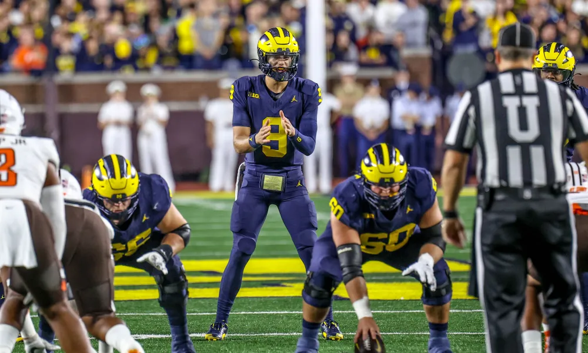
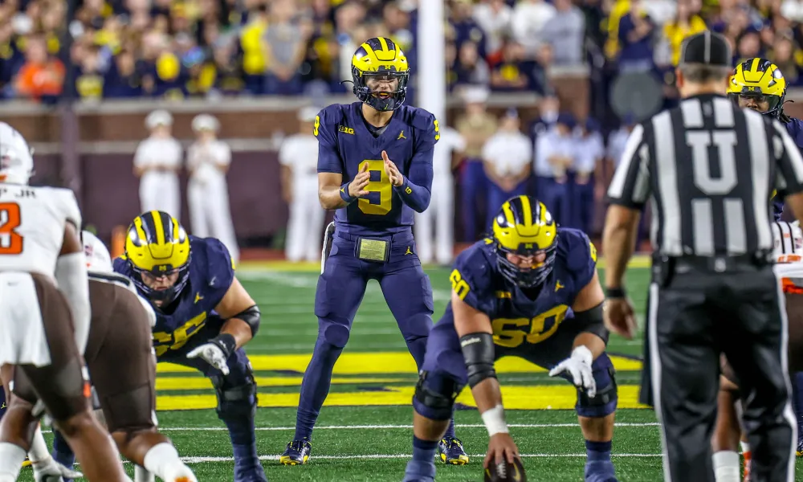

Week 3: Bowling Green @ Michigan
Date: September 16, 2023
Stadium: Michigan Stadium, Ann Arbor, MI
Result: W 31-6
 

Pre-Game Storylines
This game marked the final contest of head coach Jim Harbaugh's three-game suspension, with offensive coordinator Sherrone Moore serving as acting head coach. Bowling Green's head coach, Scot Loeffler, is a former Michigan quarterback and assistant coach, adding a layer of familiarity between the teams.
Game Recap
Michigan's defense set the tone early, forcing a three-and-out on Bowling Green's opening drive. On the Wolverines' first offensive play, running back Blake Corum broke free for a 54-yard run, setting up his own four-yard touchdown three plays later. However, the offense struggled with turnovers in the first half, including three interceptions thrown by quarterback J.J. McCarthy. Despite these setbacks, Michigan led 14-6 at halftime, thanks to a 33-yard touchdown pass from McCarthy to wide receiver Roman Wilson.
In the third quarter, defensive tackle Kris Jenkins intercepted a pass, leading to a two-yard touchdown run by Corum. Later, a 50-yard touchdown pass from McCarthy to wide receiver Cornelius Johnson extended the lead. The defense remained stout, holding Bowling Green scoreless in the second half.
Notable Performances
- Blake Corum: The senior running back rushed for 101 yards and two touchdowns on 12 carries, marking his first 100-yard game of the season.
- Roman Wilson: The wide receiver continued his strong start to the season with a 33-yard touchdown reception.
- Defense: The unit forced multiple turnovers, including interceptions by Kris Jenkins and others, and held Bowling Green to just six points.
Post-Game Remarks
Acting head coach Sherrone Moore acknowledged the team's resilience in overcoming early mistakes and praised the defense for its opportunistic play. The victory concluded Michigan's non-conference schedule on a positive note.
Game Highlights
For a visual recap of the game's key moments, watch the official highlight reel below:
Bowling Green at Michigan | Highlights | Big Ten Football | Sept. 16, 2023